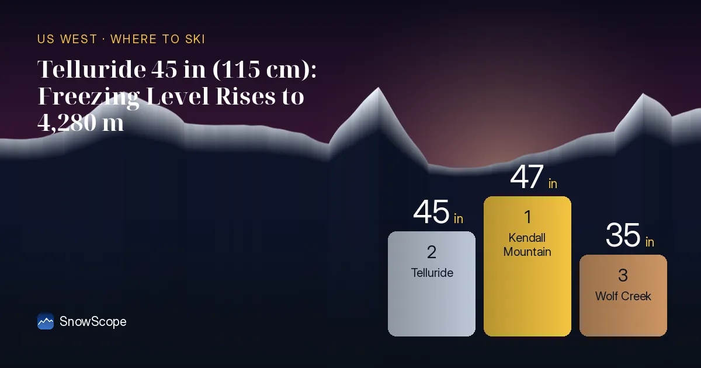
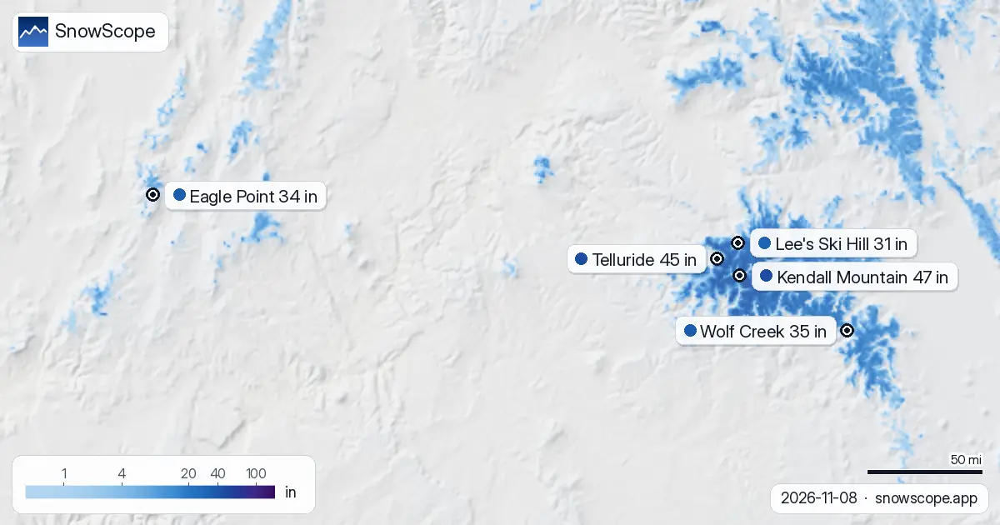

Telluride 45 in (115 cm): Freezing Level Rises to 4,280 m
Forecasts show the freezing level will climb above Telluride's summit on 9 November, reaching 4,280 m (14,042 ft). When rain falls onto existing snow at high elevation and then refreezes, it creates an icy crust that bonds the layers—a significant change in thin early-season snowpack.
See the live snow forecast for Telluride in the SnowScope appSnow depth, powder alerts and the 3D map, free.
When Rain Reaches the Ridge
This elevation exceeds Telluride's summit lift at 3,812 m (12,507 ft). When rain falls onto snow at high elevations and then refreezes in colder hours, it creates an icy crust that bonds the underlying layers and stiffens the surface.
In November, when total snow depth remains shallow across the region, such consolidation alters the skiing texture more dramatically than it would later in winter. The event itself is brief—the freeze line drops sharply after 9 November—but the structural change persists.
| Resort | Snow depth | New snow, 72 h | Coming, next days | Top |
|---|---|---|---|---|
| Kendall Mountain | 47 in (120 cm) | 0 in (0 cm) | 0 in (0 cm) | 9,528 ft (2,904 m) |
| Telluride | 45 in (115 cm) | 0 in (0 cm) | 0 in (0 cm) | 12,507 ft (3,812 m) |
| Wolf Creek | 35 in (88 cm) | 0 in (0 cm) | 0 in (0 cm) | 11,762 ft (3,585 m) |
| Eagle Point | 34 in (87 cm) | 0 in (0 cm) | 0 in (0 cm) | 10,571 ft (3,222 m) |
| Lee's Ski Hill | 31 in (78 cm) | 0 in (0 cm) | 0 in (0 cm) | 7,943 ft (2,421 m) |
Ranking the Depths
Wolf Creek and Eagle Point hold around 88–87 cm (35–34 in), while Lee's Ski Hill measures 78 cm (31 in). These reflect estimates for the highest terrain of each mountain.
Snow concentrates sharply at elevation. Telluride's mid-slope shows only 14 cm (5.5 in), illustrating how rapidly depth diminishes below the peaks. At base elevations, some areas show zero depth, confirming that early-season snow remains patchy and elevation-dependent.

What the Instruments Recorded
Ground stations provide the most reliable evidence. On 1 November, Rat Creek at 3,560 m (11,676 ft) reported 66 cm (26 in), with 23 cm (9 in) arriving in just 24 hours. Beartown, also near 3,560 m (11,676 ft), matched that depth. Red Mountain Pass at 3,371 m (11,059 ft) held 61 cm (24 in) after accumulating 28 cm (11 in) in a single day.
These measurements demonstrate that high-elevation storms genuinely filled the summits, not merely glazed them with wind-scoured surface snow.
Three Days Ahead
The freeze line is forecast to descend steeply on 10–11 November, reaching as low as 2,680 m (8,793 ft) on 11 November. This rapid modulation—warm and wet on the 9th, then cold on the 11th—creates the classic freeze-thaw cycle that consolidates snow.
The regional picture shows contraction: snow-covered area drops from 186,330 km² today to 147,690 km² by 11 November, a 21% loss in three days. This shrinkage reflects both rain-on-snow melt at higher elevations and the broader warming trend ahead.
The Bigger Picture
Across the region, 146 of 195 resorts hold some snow on 8 November, down from 151 resorts on 6 November. This fluctuation is routine in early season, when each degree of warming reshapes conditions.
What matters is that high elevations retain meaningful depth despite the thaw. Telluride, Wolf Creek, and Kendall Mountain remain the anchors holding the deepest material through the transition.
What to Watch
Skiers considering the highest terrain at Telluride or Wolf Creek should expect icy and consolidated conditions after 10 November, as rain from the 9th refreezes overnight. Early-season navigation is technical: depth looks reasonable at the summits but drops rapidly below, and rocks remain common.
Consult the Colorado Avalanche Information Center bulletin before venturing off-piste; current danger levels are rated 1 on the 1–5 scale. No new snow is forecast in the coming days, so conditions will harden rather than soften. Thin, stable snow at high elevation deserves respect.
Tips for skiers
- Watch for icy conditions on north-facing terrain above 3,800 m (12,500 ft) after the rain-refreeze cycle on 9–10 November.
- Navigate terrain carefully below the summit: depth drops sharply from 115 cm at the top to 14 cm at mid-elevation on Telluride. Rocks remain exposed in thin-cover zones.
- Ground stations measured 60+ cm at elevations above 3,350 m (11,000 ft) on 1 November; use this as reference for where continuous cover begins.
- The freezing level stays below 2,700 m (8,900 ft) on 11 November, so lower elevations will soften slightly but not consolidate as severely as the summits.
- Check the Colorado Avalanche Information Center bulletin daily; stability is rated low (1 on 1–5 scale) but rain-on-snow events can alter conditions rapidly.
About these numbers
Resort snow depths are the deepest snow on the resort's upper slopes on the date shown; they are estimates for an area, not a measurement at one point. Forecasts can change. Always read the official avalanche bulletin before going off-piste.
Official avalanche bulletins: Colorado Avalanche Information Center
Cite this report
For research, teaching or the press: the numbers and charts are free to reuse under CC BY 4.0 with this citation.
SnowScope (2026), Telluride 45 in (115 cm): Freezing Level Rises to 4,280 m, https://snowscope.app/blog/en/2026/11/us-west-telluride-snow-depth-today-8-november-2026.html, accessed 2026-11-08
SnowScope (Atlas Labs). (2026, November 8). Telluride 45 in (115 cm): Freezing Level Rises to 4,280 m. SnowScope snow reports. https://snowscope.app/blog/en/2026/11/us-west-telluride-snow-depth-today-8-november-2026.html
BibTeX
@misc{snowscope2026uswesttelluridesnowdepth,
author = {{SnowScope (Atlas Labs)}},
title = {Telluride 45 in (115 cm): Freezing Level Rises to 4,280 m},
year = {2026},
month = nov,
howpublished = {\url{https://snowscope.app/blog/en/2026/11/us-west-telluride-snow-depth-today-8-november-2026.html}},
note = {Published 2026-11-08 20:51 UTC; accessed 2026-11-08}
}· CC BY 4.0 · Methods, data and tools →
Telluride: snow and temperature by height, this winter vs last (tools) →
Follow Telluride
Free: a message when fresh snow is coming, and the forecast every morning.
More snow reports

Getting to Telluride in winter, airport by airport: Telluride Regional, Montrose, the drive on Highway 145 with the Colorado traction law, and the free gondola to Mountain Village.

Telluride got 12 in (31 cm) of new snow in the last 72 hours, 1 in (3 cm) of it in the last 24 hours. It now has about 46 in (118 cm) on its upper …

Wolf Creek holds 34 in (87 cm) at mid-mountain on a typical 15 December. Peak prices start 20 December. Data: 13 November 2026.